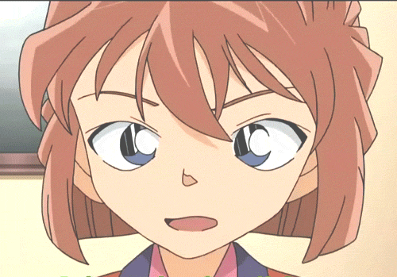
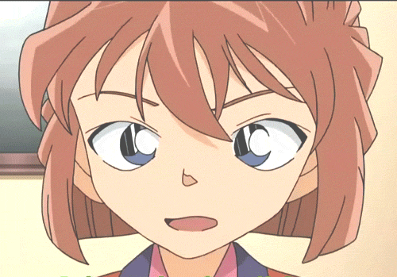

HAIBARA AI


 

'홍장미' 집중 탐구1- 이름
'명탐정 코난' 속 서브 여주, 한국판 이름 '홍장미'
일본판 이름은 '하이바라 아이'로
이름의 뜻은 '하이' 회색, '바라'는 일본어로 '장미'고,'아이'는 슬픔이므로
'슬픈 회색 장미'라는 뜻을 가졌다.
박사님은 장미에게 사랑을 의미하는
'아이(愛: 사랑)'를 추천했지만 본인의 희망으로 '아이(哀: 슬픔)'가 되었다.
'홍장미' 집중 탐구2- 첫 등장
홍장미는 명탐정 코난 애니판 129화 (원작 18권) '검은 조직에서 온 여자' 편에
처음 등장하여 첫 등장부터 도도하고 까칠한 이미지지만 이쁜 외모와
범인에게 가차 없이 총을 쏘는 점과 'APTX 4869'를 제작한 과학자라고
스스로를 밝혀 첫 등장부터 강렬한 인상을 남겨 많은 팬층을 보유하게 되었다.
'홍장미' 집중 탐구3- 논쟁거리
이 주제로 과제를 하게 된 가장 큰 이유인 '홍장미' 라는 캐릭터가 갖고 있는
여러 논쟁거리 때문이다. 장미는 'APTX 4869'를 만든 과학자로 본래는 독약이 아니지만
독약이 되어버린 약을 제조하였기에 그녀가 살인자인지 아닌지에 대한 논쟁과
주인공 코난과의 러브스토리, 최근 가장 큰 문제를 보이는 캐릭터 붕괴 등 심층적으로 탐구할 계획이다.